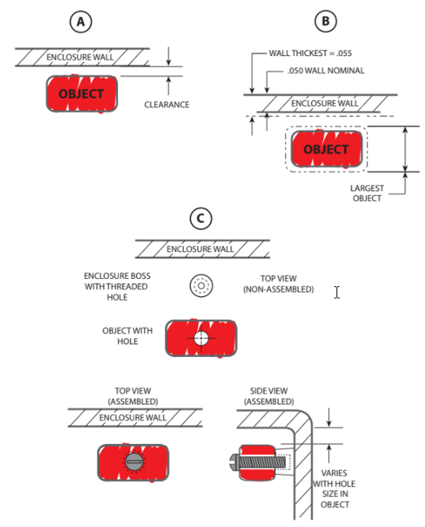
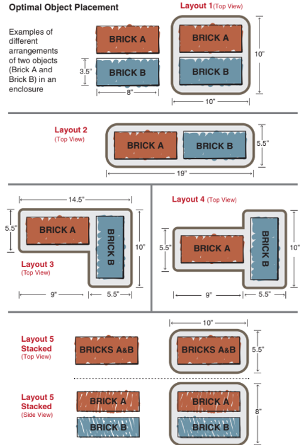
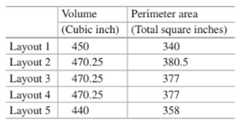

week1-4 <<
Previous Next >> week9-12
week5-8
week5:
-清明連假-

week6:
會議大綱:
1.第二次作業分配
(一)內容整理
(二)四輪車外型設置並以鍵盤控制方向
2.提醒組員完成未完成相關事項
第二次會議直播:
Chapter 2(精簡版)
建立設計
本章將以產品的角度出發，優化所有組成最終對象的對象的方法工作設計
2.1如何開始
- 全新的設計
- 延續（或增加）現有設計
- 現有設計的重大修改
2.2定義設計邊界：系統說明
- 專注於個人責任(工作範圍)
- 瞭解必須與本設計介面的其他設備
- 整體"系統"功能(而不僅僅是子系統的功能)
2.3設計過程
2.3.1總體項目開始到項目完成
1.構思草圖
2.審查想法並授權進行原型製作
3.製作原型構想的圖紙（文件創建）
4.原型製造（物理零件）
5.原型分析和測試
6.審查原型和測試結果
7.進行更改以改進原型（圖紙和原型）
8.對版本2的進一步分析和測試
9.最終文件製作/最終測試/最終審查
10.正式批准生產發布的設計
2.3.2 EPE設計者的開始注意事項
1.確定與負載不直接相關的解決方案的用途和要求
2.根據可能需要單個構件（和組件）承受的所有各種可能類型的載荷來確定或估算工作載荷
3.確定故障機制將是什麼

2.4.1間隙距離
1.物體和牆壁的公差
2.物體相對於牆壁的運動（在產品運行過程中）
3.物體的伸長（在操作過程中）
4.總體（外部）尺寸限制
2.4.2對象排列
設計人員通常會通過“生產”安排最佳化，滿足組裝，維修，美觀或用戶界面的需求
- 加工公差
- 冷卻要求
- 組裝和維修要求
- 產品品管
- 較小的生態足跡（節省材料）
- 在空間有限的情況下節省空間
- 降低成本（對於消費者或生產者）
- 產品操作所需的強度
2.4.3對象排列示例
2.4最佳對象放置
將各部件及系統裝置安排至最佳位置


關於對象排列的一些結論
- 以高效的方式利用空間
- 放置彼此需要接近的物件,盡可能靠近每個物件，反之亦是如此
章節摘要
本章將我們帶入一個只有想法的設計的起點。 它向我們展示瞭解如何將這個想法轉變為物體在空間中的幾何放置，從而使我們對該想法進行物理表現。
首先，我們著眼於起點並定義設計的邊界-我們從什麼開始，什麼是設計的“外緣” 我們必須定義客戶所需的產品。
最後需要權衡取捨，我們必須意識到我們如何確定這些權衡之間的最佳選擇。
心得:
本章節訴求在設計是要有一個有想法，從無到有設計產品的過程需要有縝密的考量也需再製造端客戶端之間去做取捨，得到雙方滿意才是個成功的產品
week7:
四輪車外型設置並以鍵盤控制方向
影片:
步驟:
1.首先點選Add>Primitive shape>Cuboid 建立矩形作為車身，給定尺寸後將車身拉高
2.接著點選Add>Primitive shape>Cylinder 建立四輪車的輪胎，給定尺寸並調整其方向及位置
3.再來點選Add>Joint>Relvoute 新增馬達給予速度並調整其方向及位置
4.檢查車體的碰撞設置是否開啟
5.複製其輪胎及馬達並將位置及結構設置好
6.將四輪車的前輪馬達重新命名為right_motor及left_motor
7.將寫好的子程式加入車體
8.進行測試(以鍵盤控制)四輪車
9.完成
第三次開會紀錄:
作業一(4 輪車)
1.根據主題 0 和主題 1 的素材，您能否具體描述機械設計團隊，為了完成作業四輪機 器人需要做些什麼?
2.四輪車馬達設定及鍵盤控制加速及轉彎
week8:
第八周上課組員示範:
week1-4 <<
Previous Next >> week9-12